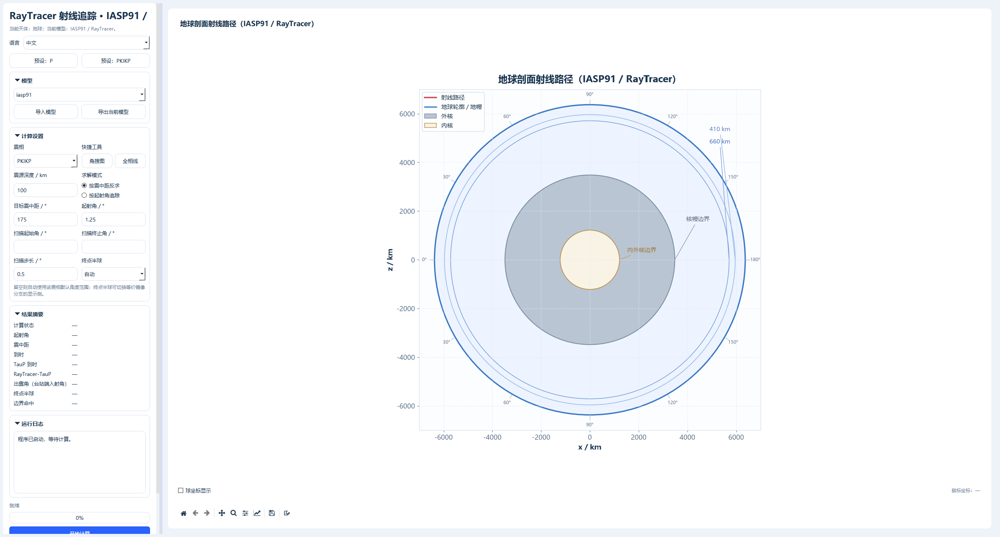

正演与射线追踪
正演是反演的镜子：反演从观测推模型，正演从模型算观测。判读一条记录时， 先用正演看看「按这个模型应该收到什么」，比直接猜要快得多。
射线追踪工作台

入口：工具 › 射线追踪工作台，或 模拟 › 射线追踪工作台。
左侧控制面板
| 分区 | 内容 |
|---|---|
| 震源 / 台站 | 震源距、台站距、震源深度、台站方位 |
| 模型 | 选地球模型（如 iasp91），导入模型、导出当前模型 |
| 计算距离 | 模型、坐标、距离设定、方位角、射线参数、扫描范围、扫描步长 |
| 计算结果 | 计算状态、震中距、震源深度、走时、射线路径、TAUP 输出 |
| 运行日志 | 执行过程记录 |
右侧画布
按 计算 之后画出地球剖面射线路径图：同心圆是速度界面 （地表、地幔、核幔边界、内核边界），曲线是从震源到台站的射线。
图上会标出各主要界面的深度：410 km、660 km 不连续面、核幔边界（CMB）、 内核边界（ICB）。射线在哪一段发生弯折，直接反映该段的速度结构。
看射线路径比看走时更能发现问题
走时只有一个数，射线路径是几十条曲线。如果某条射线在核幔边界附近
反复折射，说明它进入了核影区，那个距离上的 P 波不该出现——
这通常是模型选错或距离范围设错。
震相与距离
| 现象 | 说明 |
|---|---|
| 距离增大走时单调增加 | 正常，直达波或一次折射波 |
| 某个距离区间没有 P 波 | 核影区（约 103°–143°） |
| 走时突然跳变 | 跨过一个速度不连续面 |
导入模型 可以读自定义的速度模型文件，用来对比不同模型下同一距离的 走时差——这个差值就是模型分辨能力的下限。
四个正演入口的分工
| 菜单 | 算什么 | 典型用途 |
|---|---|---|
| 工具 › 射线追踪工作台 | 走时、射线路径 | 震相识别、距离-走时对照 |
| 模拟 › 简正模工作台 | 自由振荡频率与振型 | 长周期、行星内部结构 |
| 模拟 › 模型设计器 | 一维速度模型编辑 | 改模型再算 |
| 数据 › 勘探地震 › 正演模拟 | 二维炮集合成 | 勘探流程验证 |
简正模工作台
月球和地球的自由振荡频率对最深层结构极其敏感。简正模工作台可以从模型算出 各阶振型的频率，再和观测谱对比——频谱一章里「发送频谱到简正模工作台」 就是把这个对比的输入端接上。
常见问题
点计算没反应？ 先确认模型已选、震源深度和距离在合理范围。日志区会写具体缺什么。
走时和观测差几秒？ 模型是平均地球模型，实际路径有三维结构。几秒的偏差正常；要更准就得用 区域模型或做三维校正。
射线图画出来是空白的？ 扫描范围或步长设得太窄，导致没有满足条件的射线。把扫描范围放宽再试。